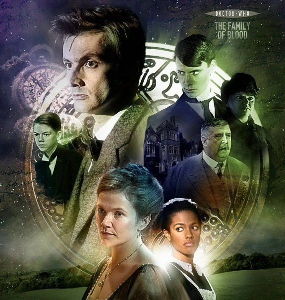

Оригинальная версия

Все серии сезона в одном видео
* без приквелов, мини-эпизодов и спецвыпусков
Оригинальная версия | Все серии сезона в одном видео * без приквелов, мини-эпизодов и спецвыпусков |
The Family of Blood
Дата выхода: 2 июня 2007
Формат: 45-минутный эпизод
| Варианты озвучек: | * Разные: смотрите по инструкции |
|---|---|
| Скачивание и просмотр: |
Доктор превращён в человека и не помнит свою прошлую жизнь, и в это время Семья Крови проникает в Лондон под видом людей...
